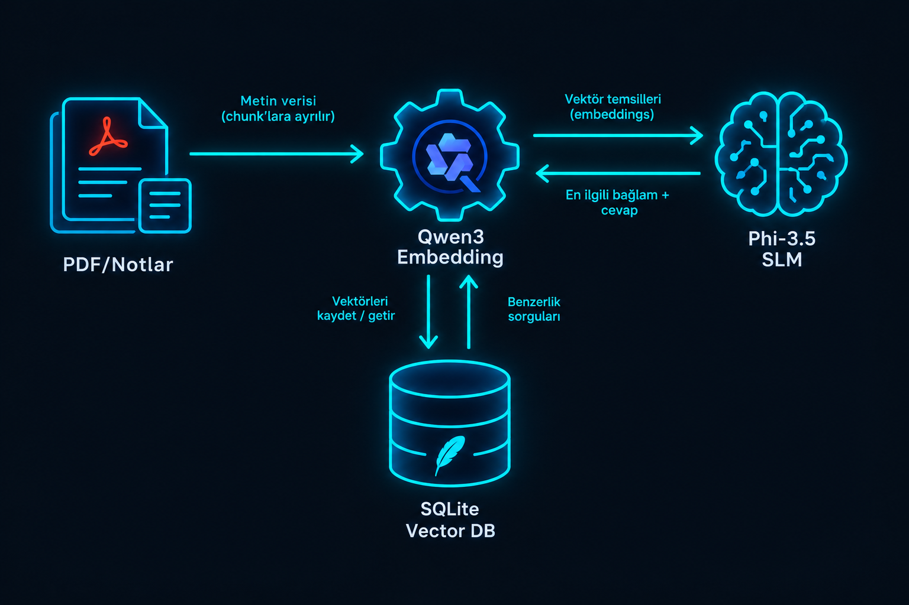
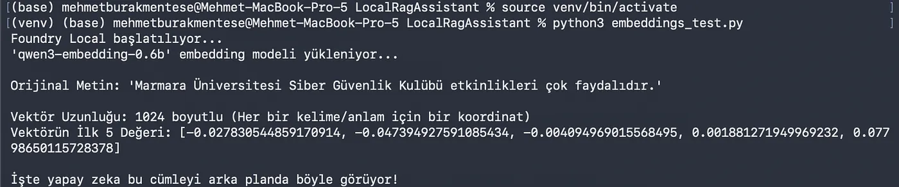
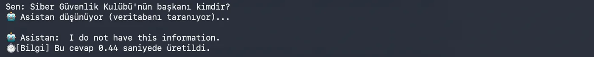
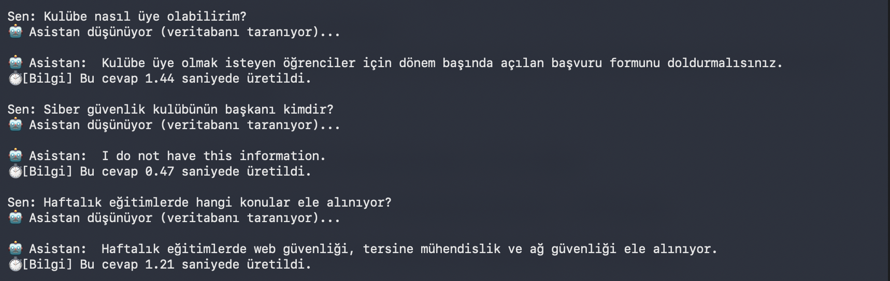

Microsoft AI Innovators Yaz Stajı programı sürecinde geliştirdiğim bu proje, tamamen yerel donanım üzerinde çalışan otonom bir asistan oluşturma fikriyle doğdu. Dış servislere (API) veri göndermeden, kullanıcının kendi bilgisayarındaki belgeler üzerinde sorgulama yapabilmesini sağlıyor.
Developed during the Microsoft AI Innovators Summer Internship program, this project originated from the idea of creating an autonomous assistant running entirely on local hardware. It allows users to query their own documents on their computers without sending data to external services (APIs).
%100 Çevrimdışı
100% Offline
Tüm model ve veritabanı lokalde çalışır, buluta veri gitmez.
The entire model and database run locally; no data goes to the cloud.
Sıfır Halüsinasyon
Zero Hallucinations
Sıkı sistem promptu sayesinde bilgi yoksa uydurmaz, dürüst cevap verir.
Thanks to strict system prompting, it doesn't invent answers if data is missing; it replies honestly.
Yüksek Hız
High Speed
0.5 - 1.5 saniye arasında son derece hızlı yanıt süresi.
Extremely fast response time between 0.5 - 1.5 seconds.
Tam Gizlilik
Total Privacy
Belgeleriniz asla cihaz dışına çıkmaz, tamamen güvendedir.
Your documents never leave the device, ensuring complete security.
Veri Akışı ve Mimari Data Flow & Architecture

Teknik Altyapı Technical Infrastructure
Model Seçimi & Üretim
Model Selection & Generation
Sohbet üretiminde phi-3.5-mini, metinleri vektörlere çevirme (Embedding) işleminde ise qwen3-embedding-0.6b kullanıldı.
phi-3.5-mini was used for chat generation, and qwen3-embedding-0.6b was used for converting texts into vectors (Embedding).
Vektör Veritabanı & Arama
Vector DB & Search
Harici bir sunucu yerine gömülü SQLite kullanıldı. Vektör eşleştirmeleri Cosine Similarity algoritmasıyla doğrudan veritabanında hesaplanıyor.
Embedded SQLite was used instead of an external server. Vector matching is calculated directly in the database using the Cosine Similarity algorithm.
Veri İşleme (Ingestion)
Data Ingestion
Belgeler önce parçalara ayrılır, qwen3 ile vektörize edilir ve sorgulanmaya hazır şekilde SQLite tablosuna indekslenir.
Documents are first chunked, vectorized with qwen3, and indexed into the SQLite table ready to be queried.


Performans MetrikleriPerformance Metrics
Apple Silicon çipleri üzerinde yapılan canlı CLI testlerinde, farklı sorgu tipleri için elde edilen ortalama çıkarım süreleri:
Average inference times obtained for different query types during live CLI tests on Apple Silicon chips:
Doğrudan Bilgi Çıkarımı: ~0.74 saniye
Mantıksal Çıkarım (Deduction): ~1.09 saniye
Bağlam Dışı Reddetme (Refusal): ~0.38 saniye
Direct Information Extraction: ~0.74 seconds
Logical Deduction: ~1.09 seconds
Out-of-Context Refusal: ~0.38 seconds

Karşılaşılan Zorluklar ve Trade-off'larChallenges and Decisions
Neden SQLite? ChromaDB veya Milvus gibi çözümler yerine SQLite kullanmak, sistemin sadece standart kütüphanelerle "tak-çalıştır" seviyesinde hafif olmasını sağladı. Ancak bu, çok büyük ölçekli vektör aramalarında hızdan bir miktar feragat etmek anlamına geliyordu. Lokal kullanım için bu denge idealdi.
Model Kısıtlamaları: phi-3.5-mini gibi küçük dil modelleri karmaşık promptlara bazen halüsinasyonla yanıt verebiliyordu. Context pencerelerini daraltarak ve RAG promptlarını çok daha spesifik hale getirerek bu sorunu aştım.
Why SQLite? Using SQLite instead of solutions like ChromaDB or Milvus ensured the system remained lightweight and "plug & play" using only standard libraries. However, this meant slightly trading off speed for very large-scale vector searches. For local use, this balance was ideal.
Model Limitations: Small language models like phi-3.5-mini could sometimes respond to complex prompts with hallucinations. I overcame this issue by narrowing context windows and making RAG prompts much more specific.
Kurulum ve Çalıştırma Installation and Execution
bash
# Depoyu klonlayın ve klasöre girin
git clone https://github.com/BurakHINGE/LocalRagAssistant.git
cd LocalRagAssistant
# Sanal ortam oluşturun ve aktif edin (macOS/Linux)
python3 -m venv venv
source venv/bin/activate
# Gerekli kütüphaneleri yükleyin
pip install -r requirements.txt
# Belgeleri vektörize edip SQLite'a kaydedin (Ingestion)
python3 ingest.py
# Asistanı başlatın
python3 app.py
# Clone the repo and navigate to the directory
git clone https://github.com/BurakHINGE/LocalRagAssistant.git
cd LocalRagAssistant
# Create and activate virtual environment (macOS/Linux)
python3 -m venv venv
source venv/bin/activate
# Install required libraries
pip install -r requirements.txt
# Vectorize documents and save to SQLite (Ingestion)
python3 ingest.py
# Start the assistant
python3 app.py
Projeyi İncelemeye Hazır Mısınız?Ready to Review the Project?